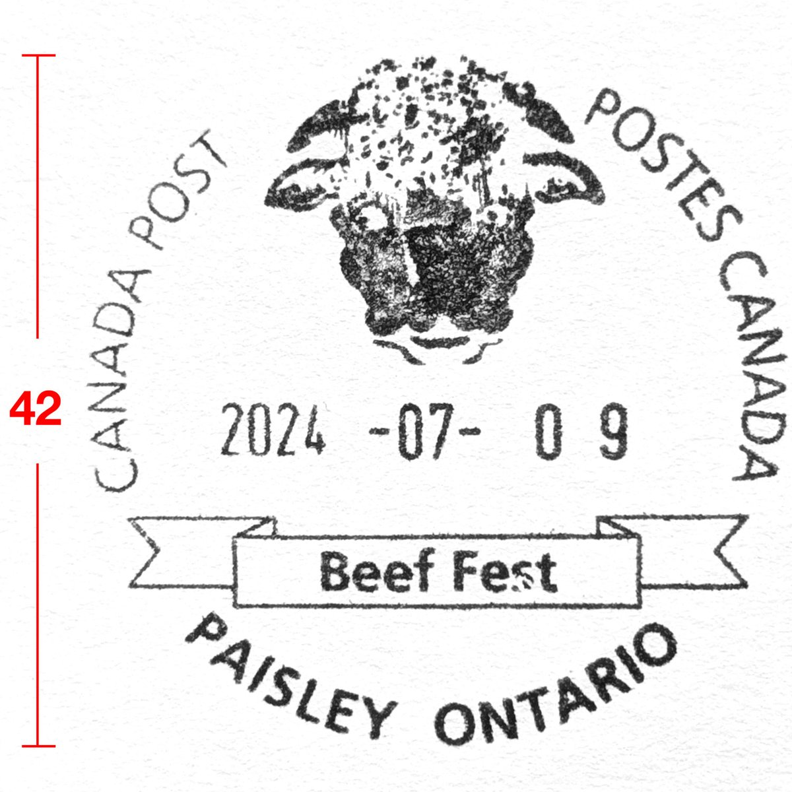

Paisley PO pictorial cancel
Beef Fest
- Status
- Active
- Run dates
- 2017-01-01 to 2028-12-31
- Design
- "Beef Fest"; cow
- Ink colour
- Black
- Designer
- Unknown
- Post office
- Paisley PO
397 Queen St S
Paisley, ON
N0G 2N0 - Subjects
- animal, mammal, cow, festivity
Collect it by mail. Send your stamped covers, with a stamped return envelope, to the post office address above. How to collect pictorial cancels by mail · en français
 Clifford POBridge
Clifford POBridge Clifford POHomecoming
Clifford POHomecoming Wiarton PO1st Willie
Wiarton PO1st Willie Wiarton PO2nd Willie
Wiarton PO2nd Willie Thornbury POBLUE MOUNTAIN POTTERY / 1953-2004
Thornbury POBLUE MOUNTAIN POTTERY / 1953-2004